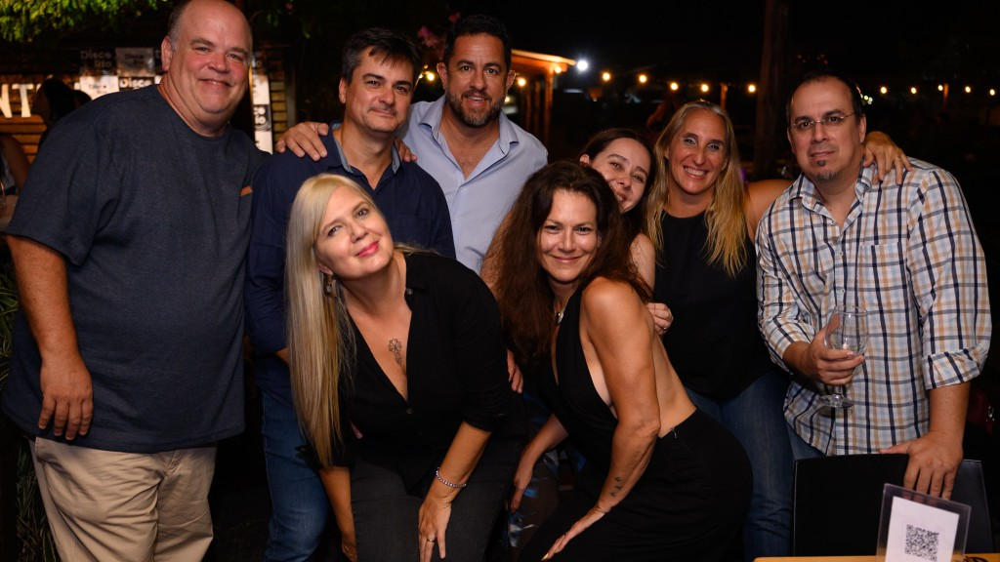
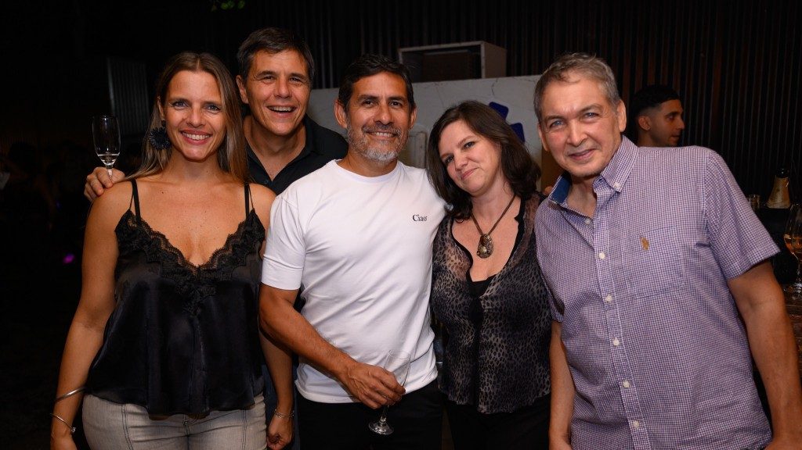
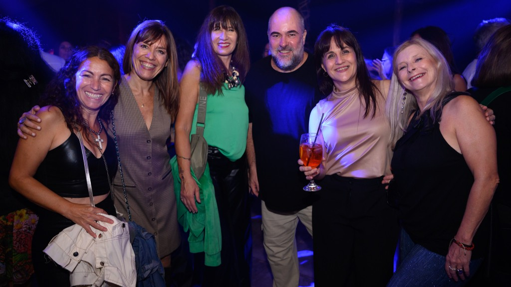
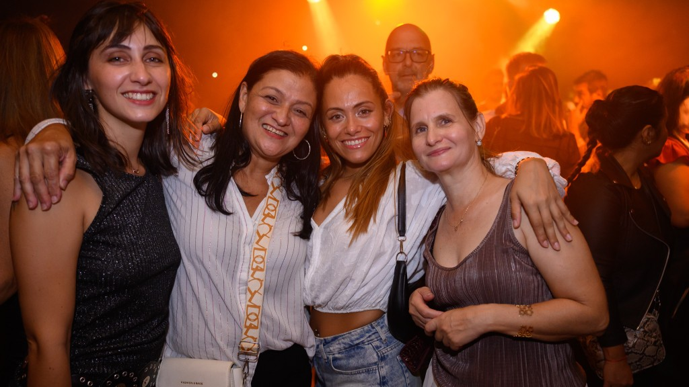
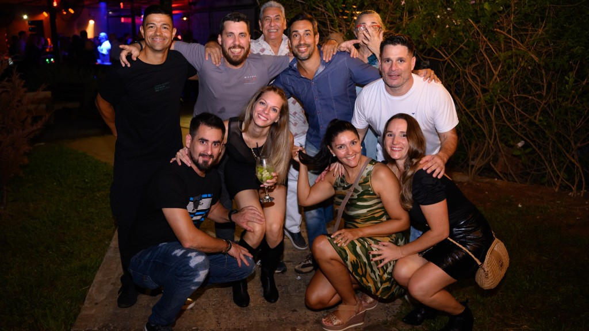
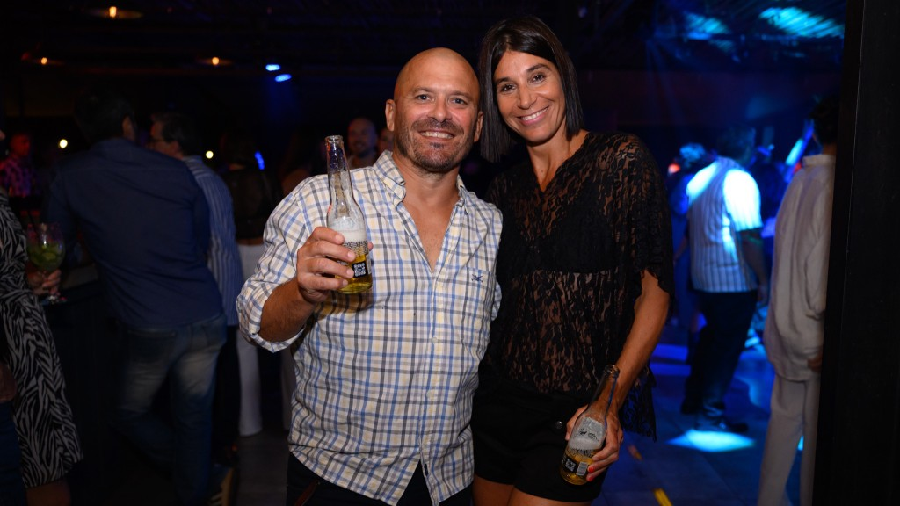
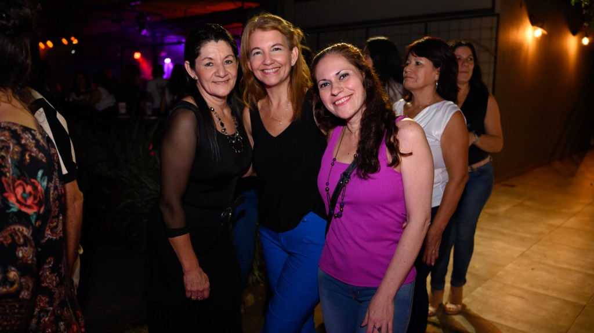
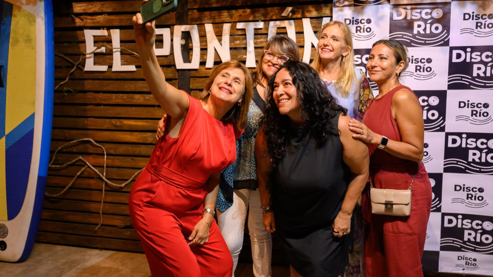
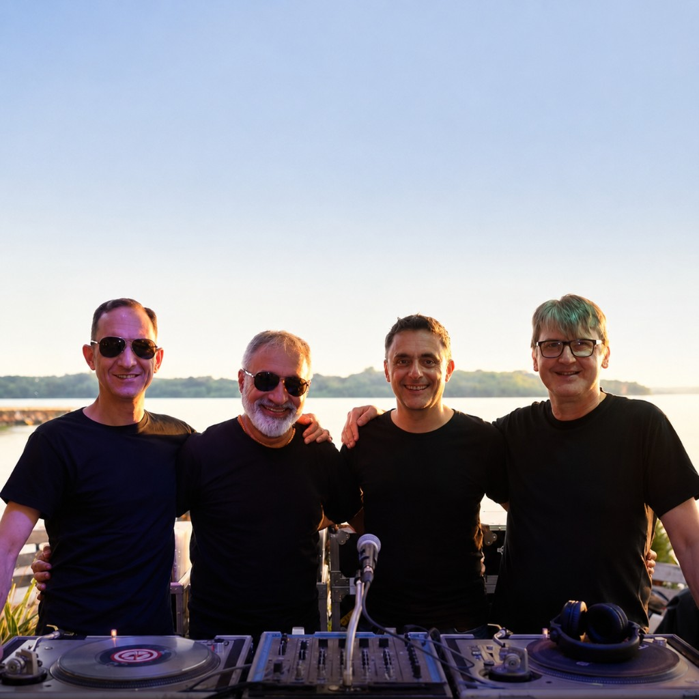

Posadas · Misiones
Disco Río Fiesta
Vinilos y clásicos de todos los tiempos, con el Paraná de fondo.
La fiesta
Una pista de clásicos
frente al río
Disco Río es un colectivo de DJs que gira vinilos y revive hits de todas las épocas. Noches al aire libre, atardeceres sobre el Paraná y esa energía de fiesta que solo aparece cuando suena el clásico correcto.
- 100% vinilo Selección hecha a mano, con el calor del formato físico.
- Clásicos de siempre Pop, disco, rock y dance que todos conocen de memoria.
- Orilla del Paraná Atmósfera de río, cielo abierto y Posadas de fondo.
Atmósfera
La noche, el río
y el vinilo
Luces cálidas, cabina al aire libre y ese momento dorado cuando el sol se mete detrás del agua.









El colectivo
Cuatro cabezas,
una sola pista
Una jornada de vinilos y clásicos de todos los tiempos.
Así nos presentan cuando salimos a tocar
Recuerdos
Buscá tu foto
Después de cada fecha subimos el material a Instagram. Seguí @discoriofiesta y encontrá tu momento en el link del perfil.
Ir a @discoriofiesta